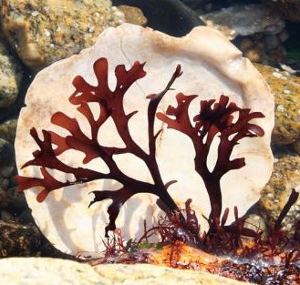

Chondrus Crispus

Flan aux algues
Une poignée d'algue
Un litre de lait (entier ou végétal)
50 gramme de sucre
2 à 3 cuillère à soupe de cacao en poudre non sucré
1-Rincez plusieurs fois les algues à l'eau douce
2-Faire chauffer le lait
3-Mettre les algues dans le lait bouillant
4-Laissez cuire dans le lait pendant une demi-heure
5-Ajoutez le sucre et le chocolat
6-Filtrer la préparation
7-Placer au moins 2 heures au frigo
Lieux: Partout en Bretagne
Marée: De la mi-marée à la marée basse
Recolter avant l'heure de la marée basse
Vérifier que le coefficient de marée est au minimum à 80
Récolte uniquement du 1er mai au 31 Octobre
Récolte à la main
Ne pas arracher le crampon de l'algue
Ne ramasser que les algues fixées
Ne jamais racler le rocher avec un outil
Autrement appelé Mousse d'irlande
Nom Breton: Pioka
Durée de vie: 2 à 3ans
Schéma:
Taille: De 10 à 15cm
Alimentation: Algue photosynthétique
Pousse sur des rochers où elle est constammenent submergée.
Elles sont très très abondantes dans leur milieu.
De couleur rougeâtre, elle est de petite taille environ 1,5cm.
Elle est cartilagineuse, possède des lames assez fines.
Au touché, elle peut paraître gluante..
C'est normal ! Elle contient des gélifiants ici les carraghénanes.
Elles sont utilisées pour faire des gelées, des confitures ainsi que des soupes !
En Irlande, elle est utilisée comme un remède pour des problèmes respiratoires : les rhumes, la grippe et encore la tuberculose.